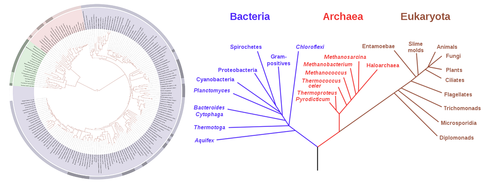
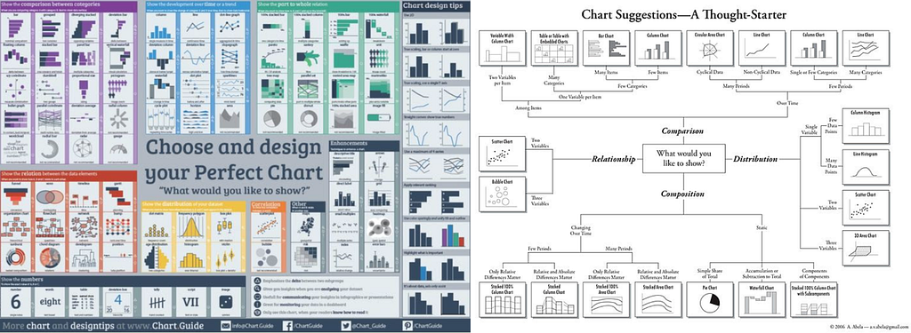
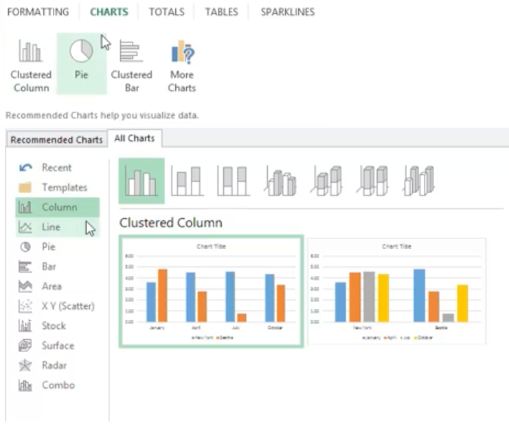
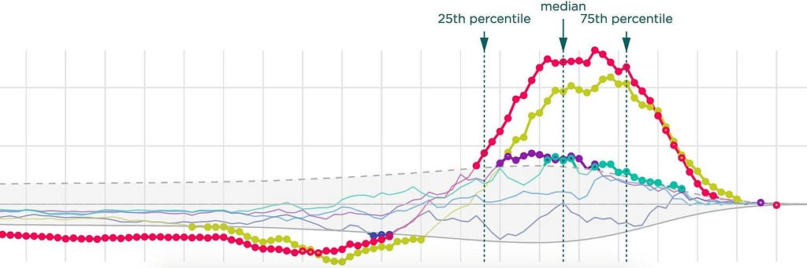
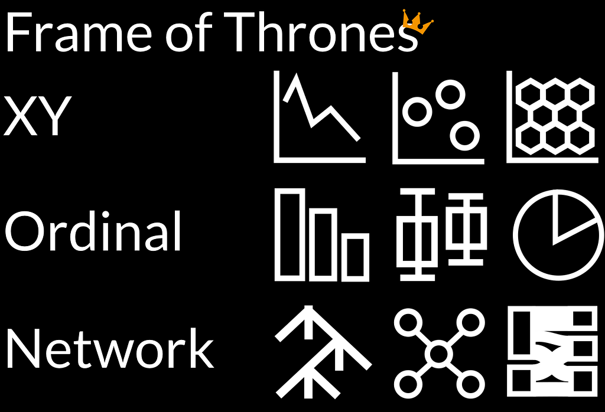
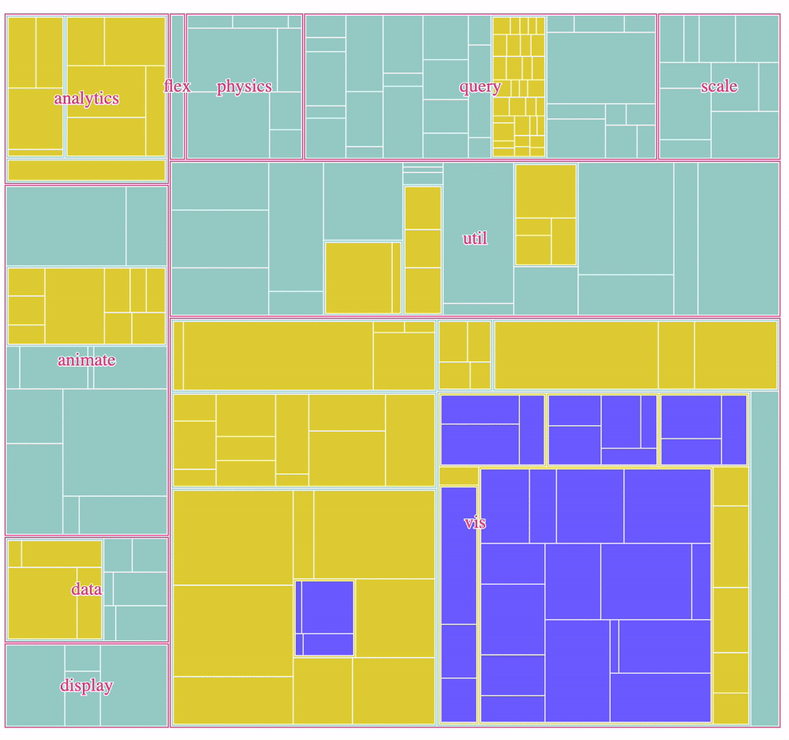
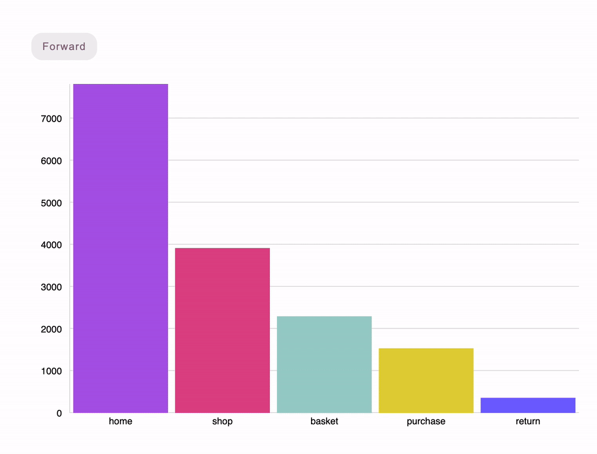

Exploring the hidden costs of taxonomic thinking
Marie Antoinetwork and other art by Hajra Meeks.
Learning data visualization, teaching data visualization, and evaluating data visualization tools have one thing in common: long lists of different kinds of charts. Depending on the mode you’re in, these chart lists define what you don’t know yet, what your students need to know, or what your stakeholders can achieve. Data visualization, despite its rapid recent growth, is still in the process of determining how to evaluate the effectiveness and appropriateness of its methods. As a result, we don’t have clear metrics available to objectively compare competing approaches to visualizing data and that’s reflected in significant variance in the way these lists are presented.
There are many forms that those lists take, but the most prominent are graphical taxonomies. Most of us have been exposed to a form of these in biology class when we learn about evolution and see tree diagrams of how species are related to each other with varying levels of complexity.

These trees are built using different approaches to how species are related such as morphology or genetics. For chart taxonomies, typically the organization has less to do with the graphical marks and more to do with the creator’s goals. So sometimes the bar charts are scattered among other kinds of charts because some types of bar charts are useful in one situation while others are useful in another. If you want to read more about data visualization taxonomies, it was one of the moderated Topics in Data Viz discussions at the Data Visualization Society. The highlights of that discussion can be found here.

You might think to yourself that this is only a concern for people who are deeply involved with designing or deploying data visualization, but it affects even the most casual user. A taxonomy may also implicitly be used in the UIs for navigating data visualization products (when the creator doesn’t simply give up and put all the chart options in a single giant menu). For example, you might see the variety of bar charts are all available in one menu. Similarly, line charts have their own menu or column, and so on. If you’re making a chart in Excel, the way that the chart options are designed and displayed relies heavily on how those charts are seen to be related to each other.

The explicit hierarchy seen in the Microsoft Excel chart selector UI that separates column charts from bar charts and line charts from area charts (among other decisions) highlights the intentional nature of organizing charts together.
The “Taxonomy Problem” is not with the taxonomies themselves. Taxonomies are helpful for understanding populations and appeal to our sense of making order from chaos. But taxonomies can also smuggle meaning and assume user intent. Put another way, the Taxonomy Problem is that hard it’s to place visual forms that could have multiple spots in a hierarchy that’s split into semantic sections, and therefore hard to use responsibly. If you aren’t careful, you accept their implicit arguments and short-change the data’s potential meaning. While useful as an initial step for organization, taxonomies involuntarily work against the production of meaning by arbitrarily constraining their users. To define the taxonomy, the creator has assigned meaning to chart types based on what modes — such as exploratory data analysis or explanatory graphics — they work best for (See my previous article on the Data Visualization Lifecycle for a detailed look at the different modes that data visualization is used for). Users limit their conception of the meaning of each chart based on the creator’s perception of its utility biased by one of these modes.
Taxonomies are popular for organizing charts but they aren’t a reflection of reality. Instead, they’re an argument for a particular perspective. Take a look at competing taxonomies. What makes a family of charts is determined by the creator of the organizing rule. This is true of all taxonomies. We’re raised with beautiful clean dendrograms of species descended from each other, but really those dendrograms all have points where you need to break the rules and draw lines across or back to be truly accurate.
The Hidden Cost of Taxonomies
Quantity versus Quality
The first implicit claim of a taxonomy comes with its use in marketing data visualization products where it reinforces the belief that more is better. ChartDo XTreme can render 37 different kinds of charts. Mastering Charts Part IV will teach you how to make 45 charts. The technical interview for Senior Data Visualator at Froggle will expect you to demonstrate that you can create at least 63 charts. More charts does not mean better charts. Some of the most powerful and compelling data visualization uses very simple charts like tables, bar charts and line charts. The number of charts also does not scale with the level of control over style and decoration of an individual chart, and a tool that allows you to make one really great line chart is better than a tool that lets you make a dozen charts that look like they were copied from a generic template.
Adapting Your Recipe
But there’s an even more dangerous aspect hidden in taxonomies: Charts are a bad unit of measurement of data visualization. If we think of charts as species of data visualization, we use the wrong metaphor. A stacked bar chart isn’t a species that evolved from a bar chart. Instead, a stacked bar chart is a mix of numerical and hierarchical visualization of the components. Let’s change the metaphor from species to food dishes. No one thinks a carrot cake evolved from a chocolate cake, they are simply two different offerings in the category of desserts.
It’s also more useful to go one step further and think of charts as a mixture of ingredients or factors. Let’s face it. It’s far more satisfying to eat cake than to eat the ingredients one by one. A cup of cake flour followed by a stick of butter and a pile of sugar does not make a great dessert. Just like there are many competing recipes for the chocolate or carrot cakes, charts shouldn’t be treated as fixed items on a menu. By emphasizing the ingredients (chart elements) and the importance of how those ingredients combine, you create signature dishes and stunning visualizations. These recipes can then be adapted and modified endlessly. The most valuable charts go beyond a basic type and offer rich annotation and tailored customization. A chart, like a delicious dish, is created for the audience.

At an initial glance, this is just a line chart. However, it’s the piece of data visualization I’m most proud of from my time working as a Senior Data Visualization Engineer at Netflix. Why? It didn’t require some new, wild charting technique. It relied on annotation and thoughtful use of double encoding to communicate a complex point to a sophisticated and discerning audience. In this case, it was how different treatments showed statistically significant positive and negative effects over the lifetime of an A/B test and guided product managers in their acceptance criteria of new features.
Limiting Flexibility
How is it that a view that looks at charts versus a view that looks at “recipes” of charts is such an important distinction? Giant lists of charts implies the user needs to choose the right one for the job, which is the wrong way to approach data visualization. Different modes of visualizing data are appropriate for different data types and domains. Choosing a chart doesn’t guarantee that it accounts for stakeholder preferences or that it uses the information design necessary to make a chart effective.
By taking the perspective of “choosing the right chart”, you lock yourself into unnecessary square peg, round hole distractions. Just because you have survey data doesn’t mean you should use data visualization traditionally associated with survey data if your audience is unfamiliar with those. Likewise, while time series data is often best in a line chart, and a table is often the best approach to visualizing data, there will be circumstances where another option is equally useful if not superior.
A final way in which taxonomies limit flexibility is that tools typically directly tie data format to chart types. Whether a graphical tool or a data visualization library, you can see the expectation that data for one type of chart takes a very different form than data for another type of chart. But data transformation is integral to data visualization, and most forms of data can be, in one way or another, shown in most forms of data visualization. That flexibility is not only valuable for exploration, where a stakeholder may want to see their data in many different forms, it’s also vital for data literacy and uncovering relationships.
How to break out of taxonomic thinking
Think less about the graphical marks being used and more about the visualization’s purpose, and rely on taxonomies that do that. When you’re developing data literacy plans for your org or writing style guides that define your organization’s best approaches to data visualization, ensure that your focus is on the ends, not the means.
Think of different ways to organize charts. When I developed Semiotic, I envisioned three fundamental frames:
- XY frames for comparing data in Cartesian space (scatterplots but also line charts, stacked area charts and grids).
- Ordinal frames for comparing categorical data (bar charts but also pie charts, violin plots and boxplots).
- Network frames not only for traditional network visualization (force-directed networks) but also sankeys, chord diagrams and circle packs, which are all visual representations of networks.
That’s not the “right” way to organize charts, it’s just another way. Thinking of other ways helps you to grow your literacy and situate your professional and design approach better.

The taxonomy under the hood (and visible in the API) of Semiotic organizes charts into three very broad categories based on whether they compare values in cartesian space, compare values across categories, or focus on topological relationships. This has a real effect on the capabilities of the library, allowing it to easily transition between hierarchical charts that are fundamentally related.

And, in perhaps a more ambitious example, it shows how a bar chart is related to a funnel diagram, a line chart and a parallel coordinates chart.

Avoid casual critiques based on chart types. Look more at the whole meal rather than the individual dishes. We’re always told that pie charts are horrible but maybe they’re useful in small multiples, supplementing other charts, or because they’re a chart that your audience expects for certain messages.
Wherever you think about charts — whether it’s in evaluating a product or growing your data visualization skills — be cautious about completely buying into the taxonomic approach. Down that path might be a point where you tell your stakeholders “Let them eat cake,” because that’s all you know.
Instead, strive to learn the common ingredients and tried-and-true recipes of great data visualization (and even start adapting some recipes of your own). Embrace the fuzziness and personalization inherent in creating great data visualization. It’s harder to express than a simple taxonomy and harder to navigate, but it’s more accurate and will lead to better skills, tools and charts.
We care about the hidden cost of taxonomies because we care about how we craft data visualization in our product at Noteable. If you’re interested in a product that cares this much about data visualization or if you’re interested in working at a company that cares this much about information design then reach out to us.
Data Visualization Has a Taxonomy Problem was originally published in Noteable on Medium, where people are continuing the conversation by highlighting and responding to this story.